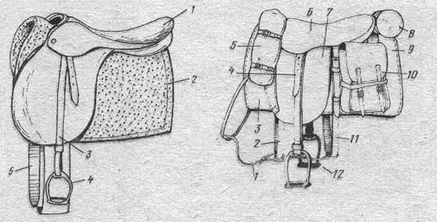

Pony::Object documentation
What is "Pony::Object"?
Pony::Object is an object system for Perl.
Yet another? Not really. If you already used OOP modules in Perl,
you may be found that they doesn't looks like regular OOP in other languages.
Generally they propose their approach for OO programming. Let's look at OOP modules for Perl.
Moosehas nice system of roles, weak refs support, before/after/around method modifiers, but it hasn't so familiar public/protected/private properties/methods. Also assignment to properties looks not usual.Mouselooks likeMoose, but smaller.- Stevan's p5-mop
- Class::*
- Blessed refs
How to ride a Pony?
First of all you need Pony. You can get it from CPAN. To get Pony::Object you may run command in console:
cpan Pony::Object